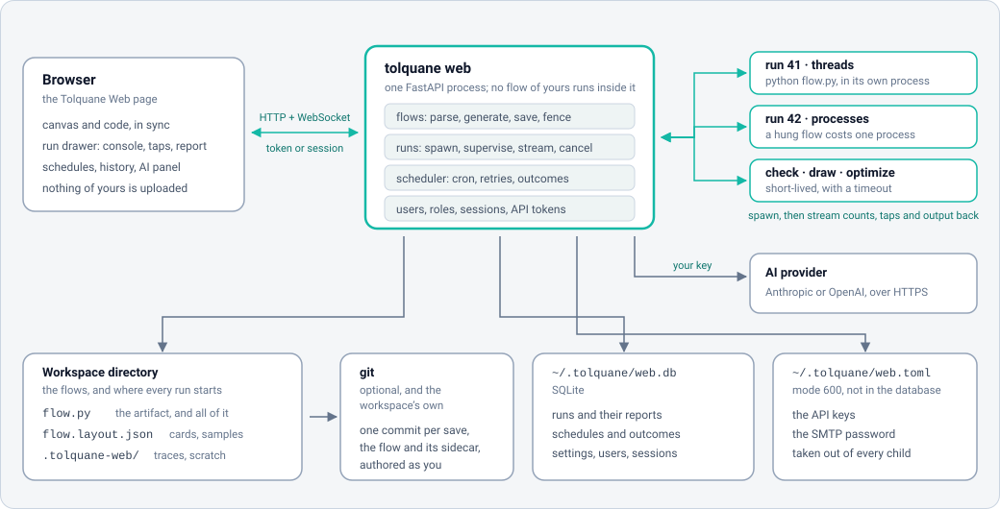

Deploying Tolquane Web¶
Tolquane Web runs flows. It is a program that executes Python you give it, with the privileges of whoever started it. Everything below is a way of deciding who that is and who can reach the page.
Four shapes, in the order most people meet them:
| Where | How | Who can get in |
|---|---|---|
| Your own machine | tolquane web |
you, because only this machine can reach it |
A machine you ssh into |
tolquane web plus a tunnel |
whoever can log in to that machine |
| A shared machine | a service on loopback, accounts, a proxy for HTTPS | whoever has an account |
| A container | Docker or compose, a token, a proxy for HTTPS | whoever has the token or an account |
What a deployment is made of¶

One process serves the page and the API. Every run, check, draw and optimize happens in a child process of its own, so a flow that hangs or crashes costs one process and the server keeps answering. Three things on disk outlive the server:
- the workspace, the directory of
flow.pyfiles (with their layout sidecars, and a git repository if you want history); $TOLQUANE_HOME/web.db, SQLite: runs, schedules, settings, users and sessions;$TOLQUANE_HOME/web.toml, mode 600: the API keys and the SMTP password.
TOLQUANE_HOME is ~/.tolquane unless you set it. Nothing else is state.
On your own machine¶
pip install "tolquane[web]"
cd ~/flows
tolquane web
That listens on 127.0.0.1:8765, opens a browser and takes the current directory as the
workspace. No login: only this machine can reach the port. --workspace DIR, --port N
and --no-browser change the obvious things, and tolquane web --check starts the
server, asks /api/health and stops, which is the line for CI.
The first account turns sign-in on, even here. See Users and sign-in.
On a machine you log in to¶
The best answer for one person on a remote machine is not to expose anything. Leave the server on loopback and bring the port to you:
ssh -L 8765:127.0.0.1:8765 host # then open http://127.0.0.1:8765/ at home
Everything is inside the SSH connection, which is more than the plain HTTP the server speaks would give you.
As a service¶
# /etc/systemd/system/tolquane-web.service
[Unit]
Description=Tolquane Web
After=network.target
[Service]
Type=simple
User=tolquane
Group=tolquane
WorkingDirectory=/srv/flows
Environment=TOLQUANE_HOME=/var/lib/tolquane
# Keys and the token, if any, out of the unit file: mode 600, owned by the service user.
EnvironmentFile=-/etc/tolquane/web.env
ExecStart=/opt/tolquane/venv/bin/tolquane web \
--host 127.0.0.1 --port 8765 --workspace /srv/flows --no-browser
Restart=on-failure
RestartSec=5
# The service runs flows, so it needs its own directories and nothing else.
NoNewPrivileges=true
PrivateTmp=true
ProtectSystem=strict
ProtectHome=true
ReadWritePaths=/srv/flows /var/lib/tolquane
[Install]
WantedBy=multi-user.target
sudo systemctl daemon-reload && sudo systemctl enable --now tolquane-web
journalctl -u tolquane-web -f
Make the first administrator before anyone can reach it. The command needs no server
running, only the same TOLQUANE_HOME:
sudo -u tolquane TOLQUANE_HOME=/var/lib/tolquane \
/opt/tolquane/venv/bin/tolquane web users add alice --admin
From then on everybody signs in, on loopback too, and the runs and schedules record who
started them. web.env can hold ANTHROPIC_API_KEY, OPENAI_API_KEY and
TOLQUANE_SMTP_PASSWORD; none of them reaches a flow, since the server takes them out
of every child's environment.
Schedules fire in the machine's own time zone, so give the service the zone you think in
(Environment=TZ=Europe/Rome) rather than assuming UTC.
Docker¶
The Dockerfile at the
root of the repository installs the released wheel from PyPI on python:3.13-slim, with
git for the History tab. Two volumes, and one environment variable that matters.
docker build -t tolquane:local .
docker run --rm -p 127.0.0.1:8765:8765 \
-e TOLQUANE_WEB_TOKEN="$(python -c 'import secrets; print(secrets.token_urlsafe(24))')" \
-e ANTHROPIC_API_KEY="$ANTHROPIC_API_KEY" \
-v "$PWD/flows:/workspace" \
-v tolquane-data:/data \
tolquane:local
/workspaceis the flow directory. Bind it to a directory of yours: the files are ordinary Python and stay yours./dataisTOLQUANE_HOME:web.dbandweb.toml. A named volume is enough.- The server binds
0.0.0.0inside the container, so it insists on a token; the entrypoint turnsTOLQUANE_WEB_TOKENinto--token. Paste it into the page once and the browser keeps it. - The image runs as uid 1000. If the bound directory belongs to somebody else, run with
--user "$(id -u):$(id -g)".
Publishing on 127.0.0.1 means the container is reachable from that machine only, which
is the safe default; put a proxy in front of it to go further.
Compose¶
docker-compose.yml
is the same thing with the volumes and the environment written down:
echo "TOLQUANE_WEB_TOKEN=$(python -c 'import secrets; print(secrets.token_urlsafe(24))')" > .env
docker compose up -d
docker compose logs -f tolquane
It reads TOLQUANE_WEB_TOKEN, ANTHROPIC_API_KEY, OPENAI_API_KEY,
TOLQUANE_SMTP_PASSWORD and TZ from .env or the environment, mounts ./workspace
and a named volume, and carries a commented Caddy service for HTTPS.
The command line, inside the container¶
Any command given to docker run replaces the entrypoint, which is how the user
commands are reached:
docker compose run --rm tolquane tolquane web users add alice --admin
docker compose run --rm tolquane tolquane web users list
docker compose run --rm tolquane tolquane run /workspace/hello.py --stats
Building from the checkout¶
npm --prefix web ci && npm --prefix web run build # the GUI assets
docker build -t tolquane:dev --build-arg SOURCE=local .
The image has no Node, so it uses the assets already in src/tolquane/web/static.
Without that step the container starts but has no page to serve.
Behind a reverse proxy¶
Tolquane Web speaks plain HTTP and does not read X-Forwarded-*, so give it a hostname
of its own and let the proxy do TLS. It is served at /, not under a path prefix.
Caddy, which gets the certificate itself and upgrades the run WebSocket without being told to:
flows.example.com {
reverse_proxy 127.0.0.1:8765
}
nginx, where the upgrade has to be spelled out or live runs never connect:
server {
listen 443 ssl;
server_name flows.example.com;
location / {
proxy_pass http://127.0.0.1:8765;
proxy_http_version 1.1;
proxy_set_header Upgrade $http_upgrade; # the run socket and the AI stream
proxy_set_header Connection "upgrade";
proxy_set_header Host $host;
proxy_read_timeout 3600s; # a long run must not be cut off
proxy_buffering off; # console output as it happens
}
}
Three things to know:
- The proxy is not the fence. Put accounts or a token behind it. A proxy that lets anyone through is a page that runs code for anyone.
- Long runs and streams. Raise the read timeout and turn response buffering off, or the console arrives in lumps and a run longer than the default timeout drops its socket. The page reconnects, but the run's own events are what it missed.
- Uploads. A flow is a file the page saves over the API;
max_source_bytes(2 MB by default) is the server's limit, so let the proxy pass at least that much.
The environment¶
| Variable | What it does |
|---|---|
TOLQUANE_HOME |
Where web.db and web.toml live (default ~/.tolquane) |
TOLQUANE_WEB_CONFIG |
The key file, if not $TOLQUANE_HOME/web.toml |
ANTHROPIC_API_KEY, OPENAI_API_KEY |
The AI builder's key, instead of the settings page |
TOLQUANE_SMTP_PASSWORD |
The password schedule outcomes mail with |
TZ |
The zone schedules fire in |
TOLQUANE_WEB_TOKEN |
Read by the container entrypoint and passed as --token |
The first four are secrets, and no flow the server runs ever sees them: the child's environment has them removed before the workspace's own variables are applied.
What to back up¶
| Path | Why |
|---|---|
| the workspace | The flows themselves, their sidecars and their git history |
$TOLQUANE_HOME/web.db |
Runs, schedules, settings, accounts |
$TOLQUANE_HOME/web.toml |
The API keys and the SMTP password |
.tolquane-web/ inside the workspace is traces and scratch, cleared by age; it is not
worth keeping. Copy the database with the server stopped, or ask SQLite for a consistent
copy while it runs:
sqlite3 ~/.tolquane/web.db ".backup '/backup/web.db'"
docker compose exec tolquane sqlite3 /data/web.db ".backup '/data/web-backup.db'"
Upgrading¶
pip install -U "tolquane[web]" # or: docker compose build --pull && docker compose up -d
The database carries a schema version and the new server migrates it when it opens it, so an upgrade is a restart. Back the file up first anyway: migrations only go forwards, and an older server will not open a newer database.
Flows need nothing. A flow.py is a plain file that python flow.py runs wherever
Tolquane is installed, which is also the answer to "what happens if I stop using this":
you keep the files.
Security, in one paragraph¶
There is no HTTPS in the server itself, so anything on a network gets a proxy in front
of it or an SSH tunnel around it. With no --host the server is on loopback and needs no
login; --host anything else is refused without --token. One account made and every
request needs a session or a personal API token, on loopback too; passwords are scrypt
hashes and tokens are kept only as their SHA-256. Every path a request names is resolved
inside the workspace, and .., absolute paths and symlinks pointing out are refused.
Accounts say who may do what on one server; they are not a fence between people's files,
and a member can run a flow, which is running code on that machine as the user who
started the server. The whole list is in the user guide's
Security section.